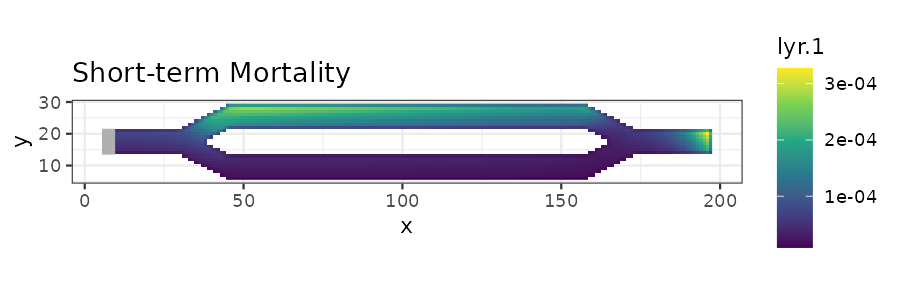

ggplot Visualization
Andrew Marx
2021-10-22
Source:vignettes/tutorial-ggplot.Rmd
tutorial-ggplot.RmdIntroduction
This tutorial shows how to plot samc analyses using ggplot2. It is based on the code in the basic tutorial.
Setup
# First step is to load the libraries. Not all of these libraries are stricly
# needed; some are used for convenience and visualization for this tutorial.
library("samc")
library("raster")
library("ggplot2")
# "Load" the data. In this case we are using data built into the package.
# In practice, users will likely load raster data using the raster() function
# from the raster package.
res_data <- samc::ex_res_data
abs_data <- samc::ex_abs_data
occ_data <- samc::ex_occ_data
# Setup the details for our transition function
tr <- list(fun = function(x) 1/mean(x), # Function for calculating transition probabilities
dir = 8, # Directions of the transitions. Either 4 or 8.
sym = TRUE) # Is the function symmetric?
# Create a samc object using the resistance and absorption data. We use the
# recipricol of the arithmetic mean for calculating the transition matrix. Note,
# the input data here are matrices, not RasterLayers.
samc_obj <- samc(res_data, abs_data, tr_args = tr)
# Convert the occupancy data to probability of occurrence
occ_prob_data <- occ_data / sum(occ_data, na.rm = TRUE)
# Calculate short- and long-term mortality metrics and long-term dispersal
short_mort <- mortality(samc_obj, occ_prob_data, time = 4800)
long_mort <- mortality(samc_obj, occ_prob_data)
long_disp <- dispersal(samc_obj, occ_prob_data)
# Create rasters using the vector result data for plotting.
short_mort_map <- map(samc_obj, short_mort)
long_mort_map <- map(samc_obj, long_mort)
long_disp_map <- map(samc_obj, long_disp)Visualization With ggplot2
# Convert the landscape data to RasterLayer objects, then to data frames for ggplot
res_df <- as.data.frame(raster(res_data,
xmn = 0.5, xmx = ncol(res_data) + 0.5,
ymn = 0.5, ymx = nrow(res_data) + 0.5),
xy = TRUE, na.rm = TRUE)
abs_df <- as.data.frame(raster(abs_data,
xmn = 0.5, xmx = ncol(abs_data) + 0.5,
ymn = 0.5, ymx = nrow(abs_data) + 0.5),
xy = TRUE, na.rm = TRUE)
occ_df <- as.data.frame(raster(occ_data,
xmn = 0.5, xmx = ncol(occ_data) + 0.5,
ymn = 0.5, ymx = nrow(occ_data) + 0.5),
xy = TRUE, na.rm = TRUE)
# When overlaying the patch raster, we don't want to plot cells with values of 0
occ_df <- occ_df[occ_df$layer != 0, ]
# Plot the example resistance and mortality data using ggplot
res_plot <- ggplot(res_df, aes(x = x, y = y)) +
geom_raster(aes(fill = layer)) +
scale_fill_viridis_c() +
geom_tile(data = occ_df, aes(x = x, y = y,fill = layer), fill = "grey70", color = "grey70") +
ggtitle("Resistance Data") +
coord_equal() + theme_bw()
print(res_plot)
abs_plot <- ggplot(abs_df, aes(x = x, y = y)) +
geom_raster(aes(fill = layer)) +
scale_fill_viridis_c() +
geom_tile(data = occ_df, aes(x = x, y = y, fill = layer), fill = "grey70", color = "grey70") +
ggtitle("Absorption Data") +
coord_equal() + theme_bw()
print(abs_plot)

# Convert result RasterLayer objects to data frames for ggplot
short_mort_df <- as.data.frame(short_mort_map, xy = TRUE, na.rm = TRUE)
long_mort_df <- as.data.frame(long_mort_map, xy = TRUE, na.rm = TRUE)
long_disp_df <- as.data.frame(long_disp_map, xy = TRUE, na.rm = TRUE)
# Plot short-term mortality
stm_plot <- ggplot(short_mort_df, aes(x = x, y = y)) +
geom_raster(aes(fill = layer)) +
scale_fill_viridis_c() +
geom_tile(data = occ_df, aes(x = x, y = y, fill = layer), fill = "grey70", color = "grey70") +
ggtitle("Short-term Mortality") +
coord_equal() + theme_bw()
print(stm_plot)
# Plot long-term mortality
ltm_plot <- ggplot(long_mort_df, aes(x = x, y = y)) +
geom_raster(aes(fill = layer)) +
scale_fill_viridis_c() +
geom_tile(data = occ_df, aes(x = x, y = y,fill = layer), fill = "grey70", color = "grey70") +
ggtitle("Long-term Mortality") +
coord_equal() + theme_bw()
print(ltm_plot)
# Plot long-term dispersal
ltd_plot <- ggplot(long_disp_df, aes(x = x, y = y)) +
geom_raster(aes(fill = layer)) +
scale_fill_viridis_c() +
geom_tile(data = occ_df, aes(x = x, y = y, fill = layer), fill = "grey70", color = "grey70") +
ggtitle("Long-term Dispersal") +
coord_equal() + theme_bw()
print(ltd_plot)